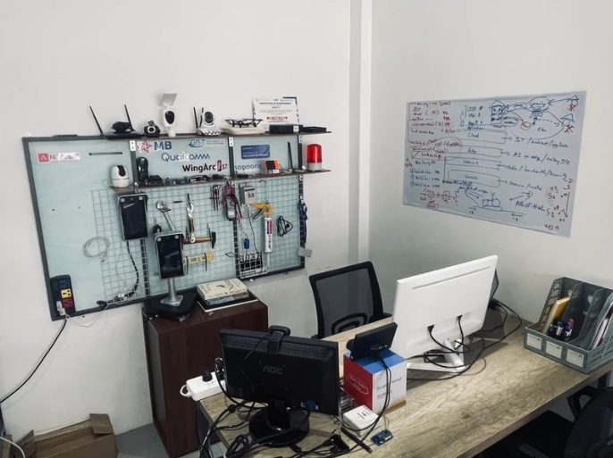
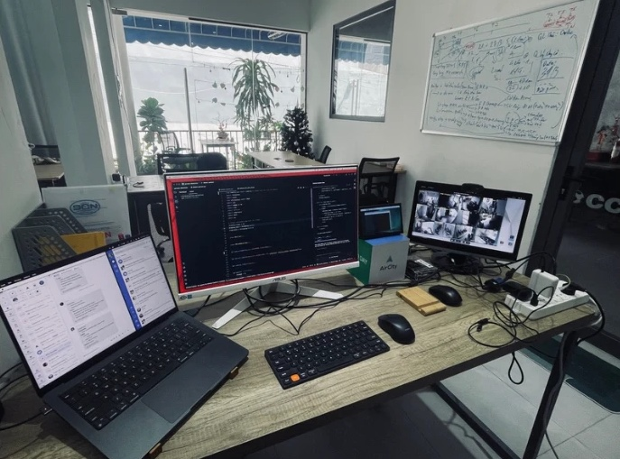

My story
Roots
I grew up in Ho Chi Minh City, a quiet kid who loved comic books, drawing, telling stories and math. Once I spent a whole week on a single hard math problem, with no internet, just a new notebook, and I still remember how it felt to solve it.
Building
In 2011 I started my first company, and the next ten years became my first decade of building startups. It took me onto stages in Malaysia, Singapore, South Korea and Taiwan, and to exhibitions from Hong Kong to Paris and London. It also gave me low points that made me ask why I build at all. In 2021 I started again with AirCity: technology for safer, smarter places to live.
Now
Today I'm a father, still building and still writing. I keep notes about time, mindset, faith and family, mostly for myself, and maybe one day for my children.

